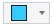
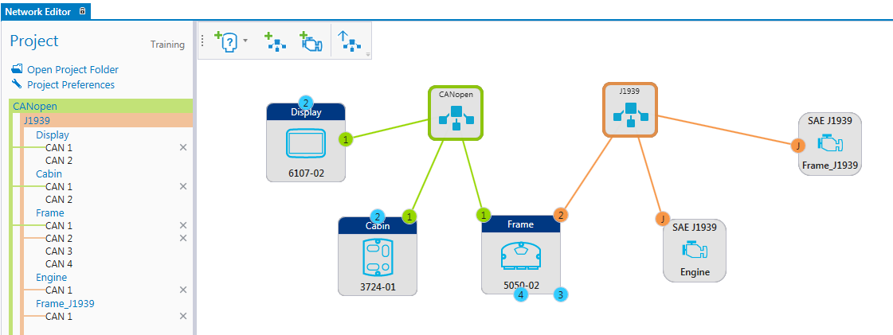
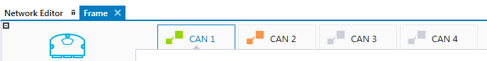

All the networks can have a color definition that are shown, for example, in the Network Editor and also in the device's Configuration view's CAN channel tabs.
To define the network color:
Select a network
Select the color from the hover menu

The color(s) can be seen in the Network Editor:

The color(s) can also be seen in device configuration CAN channel tabs:

Epec Oy reserves all rights for improvements without prior notice.
Source file 6_9_4_Configure_Module.htm
Last updated 25-Jun-2025